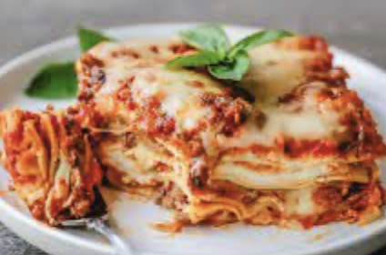

Lasagna

A tomato based pasta dish served with a generous amount of ground pork.
Ingredients:
- Sweet Italian sausage
- Lean ground beef
- Minced onion
- Crushed garlic
- Canned crushed tomatoes
- Canned tomato sauce
- Water
- White sugar
- Seasoning of choice
- Lasagna noodles
- Ricotta cheese
- Egg
- Mozarella cheese
- Parmesan cheese
Steps:
Step 1
- Gather ingredients
Step 2
- Cook sausage, ground beef, onion, and garlic in a Dutch oven over medium heat until well browned.
Step 3
- Stir in crushed tomatoes, tomato sauce, tomato paste, and water. Season with sugar, 2 tablespoons parsley, basil, 1 teaspoon salt, Italian seasoning, fennel seeds, and pepper. Simmer, covered, for about 1 1/2 hours, stirring occasionally.
Step 4
- Bring a large pot of lightly salted water to a boil. Cook lasagna noodles in boiling water for 8 to 10 minutes. Drain noodles, and rinse with cold water.
Step 5
- In a mixing bowl, combine ricotta cheese with egg, remaining 2 tablespoons parsley, and 1/2 teaspoon salt.
Step 6
- Preheat the oven to 375 degrees F (190 degrees C).
Step 7
- To assemble, spread 1 1/2 cups of meat sauce in the bottom of a 9x13-inch baking dish. Arrange 6 noodles lengthwise over meat sauce. Spread with 1/2 of the ricotta cheese mixture. Top with 1/3 of the mozzarella cheese slices. Spoon 1 1/2 cups meat sauce over mozzarella, and sprinkle with 1/4 cup Parmesan cheese.
Step 8
- Repeat layers, and top with remaining mozzarella and Parmesan cheese. Cover with foil: to prevent sticking, either spray foil with cooking spray or make sure the foil does not touch the cheese.
Step 9
- Bake in the preheated oven for 25 minutes. Remove the foil and bake for an additional 25 minutes.
Step 10
- Rest lasagna for 15 minutes before serving.